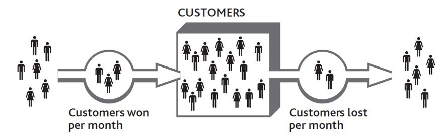
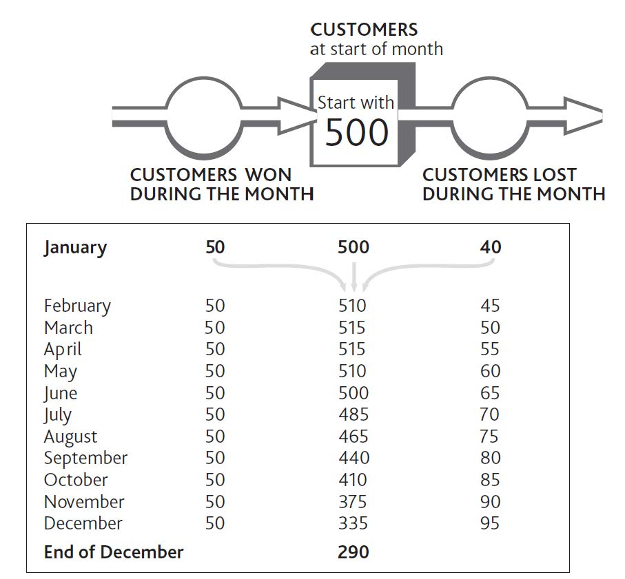
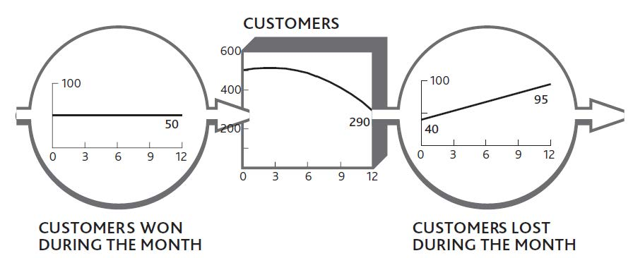

Since a firm’s performance at any time directly reflects the resources available, it is essential that we understand how these resources develop over time and how we can control the process.
Think about the regular customers using your restaurant. These people did not magically come into existence at a particular moment in time; they have become loyal customers. Some have been visiting your restaurant for years; others have begun only recently. There will also be people who used to be customers but then stopped. Perhaps they had a bad meal, got tired of the menu, or found another restaurant they preferred.
This idea is captured in Figure 3.1 "Building and Losing Customers". The tank in the middle holds the number of customers you have right now. To the left is the outside world, where there are many people, some of whom may become future customers. The big “pipe” flowing into the tank has a pump that determines the speed at which the tank stock is filling with new customers. On the right, another pump on a pipe flowing out of the tank shows how quickly you are losing customers, and again you can see people in the outside world who include your former customers. Because the tank in this diagram holds the inventory or “stock” of customers, this diagram is known as a stock-and-flow structure.
Figure 3.1 Building and Losing Customers
Let us see how this works. By mailing out discount vouchers to local homes, you hope to pump some new consumers into the tank. However, if you do not have enough staff to provide good service, you will inadvertently increase the speed of the outflow pump and soon lose them again. The number of customers will have filled up, but then drained away again.
After customer numbers have fallen back, your staff should be able to provide good service once more. The outflow pump slows, and your tank returns to a more stable state. The process is a familiar one but difficult to estimate over time.
The idea of resources filling and draining seems simple enough. After all, we see it happening around us all the time, from the water in our bathtub, to the cash in our bank, to cars in a city, to rabbits in a field. But merely being aware of this process is not enough if we want to take control. We need to know the following:
Figure 3.2 "Working Out Growth and Loss of Customers Through Time" shows what would happen to the number of customers in your business if you were to win 50 new people per month but also lose an increasing number of customers every month. You lose 40 people in the first month and an extra 5 people every month thereafter.
The case was made in Chapter 1 "Performance Through Time" and Chapter 2 "Resources: Vital Drivers of Performance" that you should always be looking at how things change over time, so these monthly numbers, too, can be shown as time charts. We can still keep the image of the bathtub or tank of customers and the pipes and pumps showing the rate at which customers are flowing in and out of your business (Figure 3.3 "The Change in Customer Numbers Over Time").
The idea that resources fill and drain over time has long been recognized in strategy research (Dierickx & Cool, 1989), so what we will do here is make this mechanism practical to use and connect it to how the rest of the business system works.
Figure 3.2 Working Out Growth and Loss of Customers Through Time
Figure 3.3 The Change in Customer Numbers Over Time
